La última entrega cargada de Trance melódico y Progressive de alta energía. ¡No te la pierdas!
Un tributo a los grandes himnos de la música Remember y los sintetizadores icónicos de 1999.
Una hora de puro Progressive House de los 2000 que te hará viajar en el tiempo.